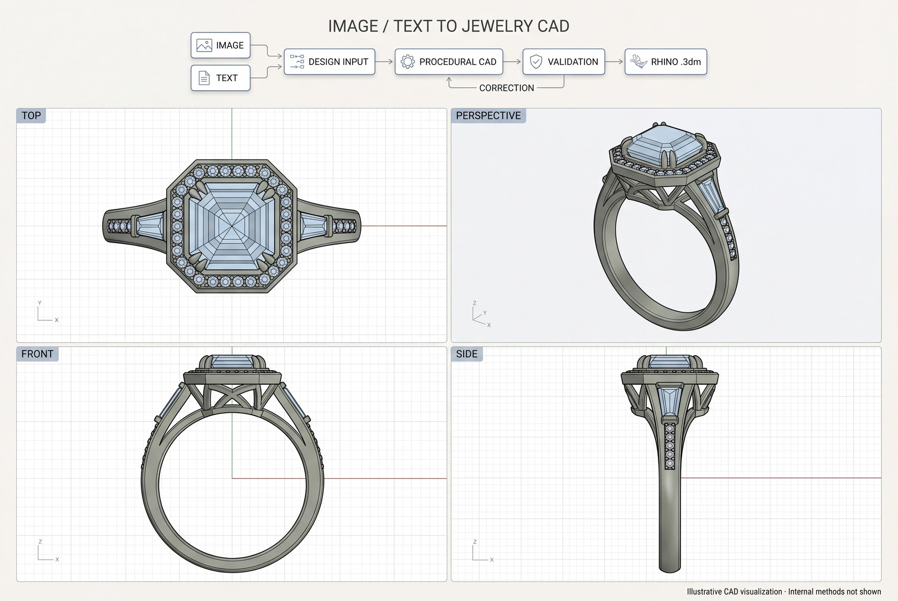

Jewelry CAD / Image and text to Rhino
Generate a ring.
Keep editing it.
Image and text to editable jewelry CAD.
Separate parts in a Rhino file you can take into your own design process.

The result is an editable ring model. Download the Rhino file, open it in CAD software, and continue working on the design.
Our workflow takes an image or a text description and generates jewelry CAD for supported ring designs. The .3dm file keeps generated parts as separate named objects on layers. You can select and work on those parts individually instead of receiving the whole ring fused into one mesh.
01 / Editable parts
A ring you can work on.
The generated band, setting, stones, and other components retain the part boundaries defined by the design. In Rhino, you can select an object, hide it to inspect what is underneath, move it, replace it, or edit its geometry with the appropriate CAD tools.
The file uses millimetres and contains CAD surface geometry. Separate objects and layers make it easier to inspect the assembly and continue the design work after generation.
Editable geometry does not imply a full parametric feature history. Changing one part may require adjustments to neighbouring parts, and the available editing operations depend on the object type.
02 / File handoff
Open it in Rhino.
Continue in your own tools.
Open the native .3dm file directly in Rhino. If you use another CAD application, check its support for Rhino files or export a compatible format from Rhino. What carries across, including layers, object names, and surface geometry, depends on the format and the receiving application.
| File | What it is for |
|---|---|
Rhino .3dm | Separate named parts for CAD inspection and further editing. |
Preview .glb | A convenient way to view the ring in 3D. |
Keep the Rhino file as your CAD master. Use the preview to look at the design and share its appearance. See Rhino’s supported file formats when planning a handoff to another application.
03 / Production
Take the design through
to production review.
The workflow is ready for production use on supported ring designs, with CAD review before manufacture. A designer or jeweller can continue editing the downloaded model, check the final geometry, and prepare an approved version for the intended manufacturing process.
That means checking ring size, stone dimensions, seats, prongs, wall thickness, clearances, and any open or intersecting surfaces. Casting, printing, and machining each have their own requirements. Once the design meets those requirements, it can move into the normal production process.
Generation provides the CAD starting point. The final manufacturing decision belongs to the person reviewing the piece.
04 / The work behind it
Why procedural rings
were the hardest part.
I have worked on pipelines for garments, jewelry, game assets, media, robotics, and electrical circuits. Procedural ring generation has been the most difficult of these projects.
A reference image leaves a lot unstated. It does not tell you the thickness behind a setting, the exact stone size, or how hidden parts connect. The geometry still has to make sense when you turn the ring around or open it in CAD.
My team and I built our ring generation workflow around six months ago. We have since extended it to native Rhino CAD so users can continue working with the result in their own software. Our garment automation work includes J., Sitara, and Kollective Moda.
The workflow supports a defined range of ring designs. Unclear references, missing dimensions, and designs outside that range still need more input or manual work.
05 / Common questions
Working with the files.
Is the ring one mesh or separate editable parts?
The Rhino export stores generated parts as separate named objects on layers. You can select and edit individual objects. The design determines how finely the components are divided.
Can I edit the ring after downloading it?
Yes. Open the .3dm file in Rhino and continue editing the geometry. You can also use compatible CAD software, subject to its import support.
Can I use it to make a physical ring?
The CAD can be developed into a design for manufacture. Review and correct the model for the actual stones, material, dimensions, and production method before releasing it.
Can I start with text instead of an image?
The workflow supports image and text inputs for supported ring designs. A clear brief and useful dimensions help make the result easier to assess.